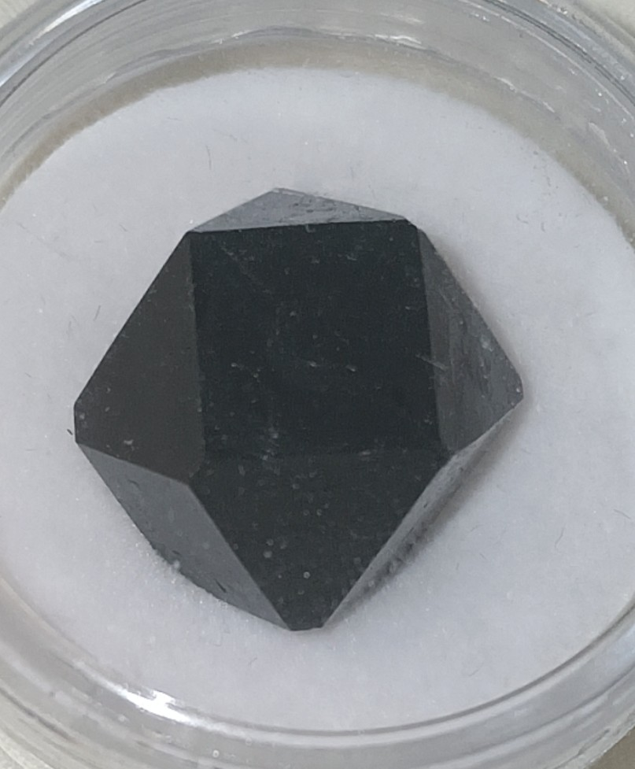

晶体化学指南
硫酸钒铵篇

图源：Kerbal123
🎯 预览
项目概览：
难度等级：★★★☆☆ (高级)
培养周期：2-7天
成功率：70%
推荐人群：有经验的晶体爱好者
所需材料：
五氧化二钒(V₂O₅)
浓硫酸
硫酸肼
二氯锡(SnCl₂)
硫酸铵
铅板、电解设备
一、基础认识
1.1 化学特性
化学式：NH
4
V(SO
4
)
2
·12H
2
O
系统名称
十二水合硫酸钒铵
外观特征
蓝紫色晶体（固态），水溶液呈墨绿色
钒价态
晶体中含有+3价钒(V³⁺)，固态呈现蓝紫色，溶解后为墨绿色
稳定性
在空气中相对稳定，但需避光保存
1.2 晶体学特性
晶系
正方晶系
颜色特性
+3价钒在固态时呈现蓝紫色，溶解后为墨绿色，这是晶体场效应导致的颜色变化
结构特点
V³⁺离子与硫酸根和铵离子形成配合物晶体，水分子参与配位
二、实验与制备
2.1 二氯锡还原法
💡 关键：还原到+3价钒
步骤一：配制钒溶液
将2g五氧化二钒(V₂O₅)与20mL 3M硫酸混合
五氧化二钒可以不溶解直接开始还原
肼离子可以还原固体五氧化二钒
步骤二：直接还原
直接加入硫酸肼，加热搅拌至固体完全溶解，溶液变为墨绿色
反应会直接从+5价钒还原到+3价钒
用二氯锡法不可能生成二价钒
注意：
即使生成二价钒，在空气中放置两天会自动氧化消失
步骤三：结晶
加入5g硫酸铵，搅拌至完全溶解，缓慢冷却至室温
化学反应：V³⁺ + 2SO₄²⁻ + NH₄⁺ + 12H₂O → NH₄V(SO₄)₂·12H₂O
1-2天后会析出蓝紫色晶体
2.2 电解还原法（替代方案）
💡 电化学还原至三价
配制V₂O₅溶液
将五氧化二钒与稀硫酸混合，可直接开始电解还原
电极配置
使用两个铅板，阴极面积要远大于阳极面积，在1-2A电流下电解
电解终点
直到溶液变成墨绿色为止（V³⁺形成）
结晶
加入硫酸铵，缓慢冷却结晶
2.3 重结晶提纯
溶剂选择
使用稀硫酸溶液进行重结晶
操作步骤
加热溶解后缓慢冷却，可获得更纯净的晶体
注意事项
避免剧烈扰动，防止晶体缺陷
三、安全与注意事项
3.1 钒化合物毒性
毒性等级：
中等毒性，LD₅₀(大鼠口服) ~ 100 mg/kg
健康危害：
对呼吸系统、肝脏和肾脏有损害
防护要求：
必须在通风橱中操作，佩戴防尘口罩
废液处理：
含钒废液必须专门处理，不可随意排放
3.2 操作危险
浓硫酸腐蚀：
具有强腐蚀性，操作时需佩戴防护装备
气溶胶危害：
反应过程中产生气溶胶，必须在通风橱操作
气体释放：
还原反应可能释放气体，需在通风良好处操作
3.3 防护措施
个人防护
必须佩戴防酸手套、护目镜、实验服和防尘口罩
通风要求
整个操作过程必须在通风橱或通风良好的环境中进行
应急处理
皮肤接触：立即用大量清水冲洗
眼睛接触：立即用流动清水冲洗15分钟
吸入：立即移至新鲜空气处
四、成果展示与质量评估
优质晶体特征
优质晶体：
颜色纯正，呈鲜艳蓝紫色
晶体完整，棱角分明
透明度高，内部无杂质
尺寸均匀，表面光滑
问题晶体：
晶体缺陷 - 扰动过大或结晶速率过快
不结晶 - 浓度低、扰动不足或没有晶种
颜色不正 - 还原不完全
五、问题诊断与解决
常见问题排查
问题一：晶体不结晶
可能原因：
浓度过低、扰动不足、缺少晶种
解决方案：
增加溶液浓度，提供轻微扰动，加入晶种引导结晶
问题二：晶体缺陷
可能原因：
扰动过大、结晶速率过快
解决方案：
减少外界扰动，降低结晶速率，提供稳定环境
六、科学原理
6.1 钒化学
钒的价态
+2价：紫色(V²⁺)
+3价：固态蓝紫色/溶液墨绿色(V³⁺)
+4价：蓝色(VO²⁺)
+5价：黄色(VO₂⁺)
颜色变化原理
+3价钒在固态和水溶液中的颜色差异源于晶体场效应和配位环境变化
6.2 反应机理
还原机理
肼离子可直接还原固体五氧化二钒至+3价钒
二氯锡法不会生成二价钒，不存在过度还原问题
结晶机理
V³⁺与SO₄²⁻和NH₄⁺形成稳定的十二水合晶体
本章作者
Kerbal123
冷门配合物晶体专家
内容导航
基础认识
实验制备
安全事项
质量评估
问题诊断
科学原理
返回首页